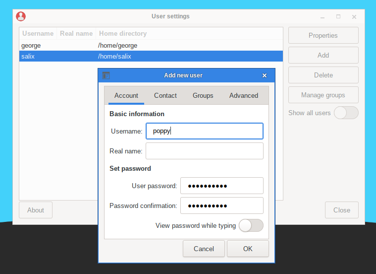

In Unix/Linux, all users and groups of users are given certain permissions and access rights to some part of the system in order to control their ability to access and change it.
This utility manages the creation, deletion and properties of all the system users and groups of users.

To execute it in a terminal, simply type
sudo usersetup